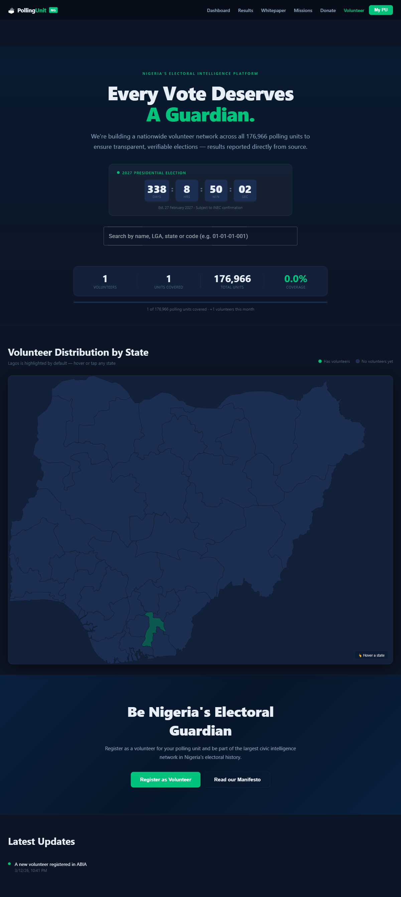

Polling-unit data is useful only if ordinary users can search it quickly, understand the result, and trust that the public record is structured consistently.
Product record
PollingUnit
A civic data workspace for searching polling units, supporting autocomplete, and moving an older data approach into a Firestore-backed product.
I built the Angular lookup surface, Firestore-backed records, migration and seed scripts, optional search indexing direction, and Firebase deployment setup.
Turning a static civic dataset into a usable lookup product with enough structure for search, autocomplete, and future maintenance.
Product views
Civic data lookup, made easier to search and maintain.
The product is smaller than the operating platforms, but it shows data migration, public lookup, and search behaviour around civic records.

What it is
The product gives users a way to find polling-unit records through a focused web interface instead of dealing with raw data dumps or hard-to-search lists.
What I built
- Angular frontend for polling-unit lookup and public search.
- Migration path from Mongo-style storage to Firestore-backed records.
- Server scripts for seeding, migration, and optional search indexing.
- Firebase hosting and functions setup for deployment.
Technical surface
The workspace uses Angular, Firebase hosting, Firebase Functions, Firestore, migration scripts, and optional Meilisearch indexing with a Firestore fallback.
Product judgment
The main product decision was to keep the public interface narrow and trustworthy: search, find, confirm. For civic data, clarity beats feature count.